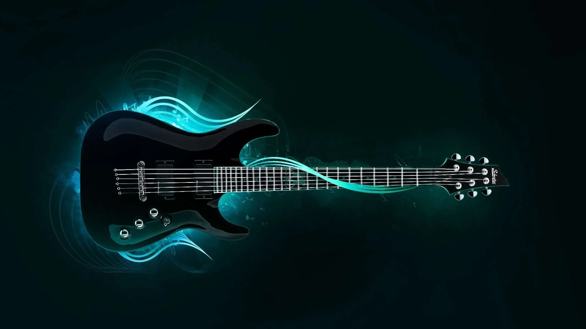

Famous Instruments
1. Piano/Keyboard

2. Guitar
3. Violin
4. Drums
Types of Music

Classical Music
Classical music generally refers to the art music of the Western world, considered to be distinct from Western folk music or popular music traditions.
- Moonlight Sonata – Beethoven
- Für Elise – Beethoven
- Canon In D Major – Pachelbel
- Clair De Lune – Debussy

Rock Music
Rock music is a broad genre of popular music that originated as "rock and roll"
- Respect - Aretha Franklin
- Johnny B. Goode - Chuck Berry
- Billie Jean - Michael Jackson
- Rock Around The Clock - Bill Haley & His Comets

K-pop
K-pop short for Korean popular music,is a form of popular music originating in South Korea as part of South Korean culture.
- (G)I-DLE, "Tomboy"
- IVE, “Love Dive”
- BIGBANG, "Still Life"
- BLACKPINK, "Pink Venom"
Jazz
Jazz is a music genre that originated in the African-American communities of New Orleans, Louisiana.
- Summertime – Ella Fitzgerald
- I Got Rhythm – Sarah Vaughan
- Body and Soul – Coleman Hawkins
- The Girl From Ipanema – Stan Getz